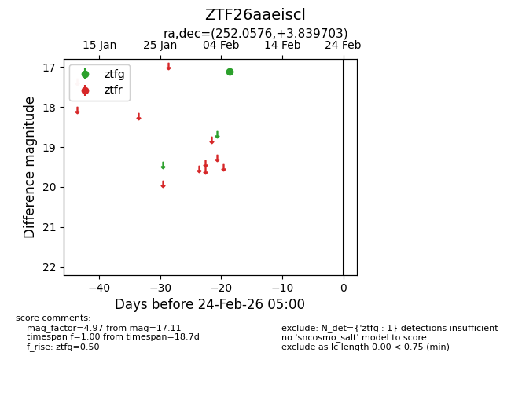
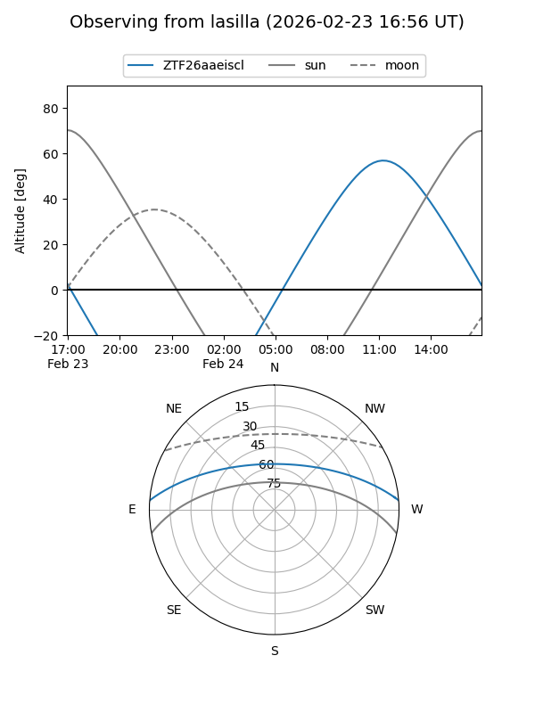
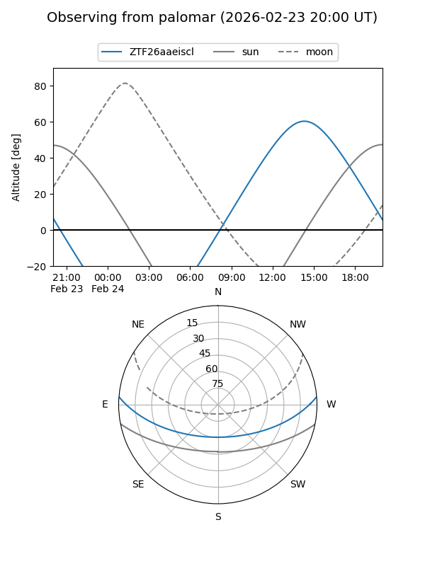

ZTF26aaeiscl
Target ZTF26aaeiscl at 2026-02-24 09:08
Aliases and brokers:
FINK: link
Lasair: link
ALeRCE: link
alt names
ZTF26aaeiscl (ztf,fink_ztf)
Coordinates:
equatorial (ra, dec) = 252.0576,+3.83970
equatorial (HMS+DMS) = 16:48:13.83,+03:50:22.93
galactic (l, b) = (21.4954,+29.02877)
Flags:
Photometry:
last ztfg=17.11
1 ztfg detections
Lightcurve

Visibility


Additional plots